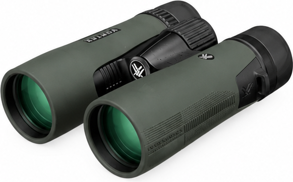
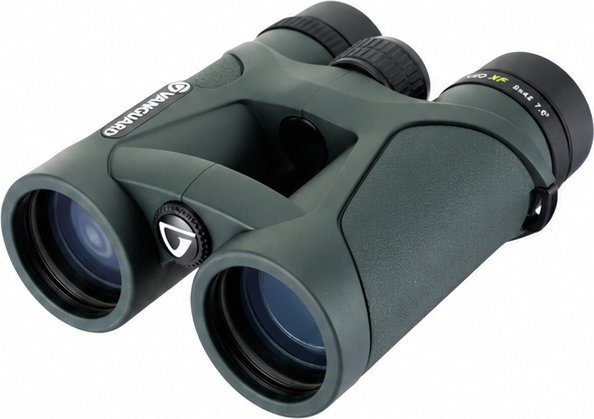
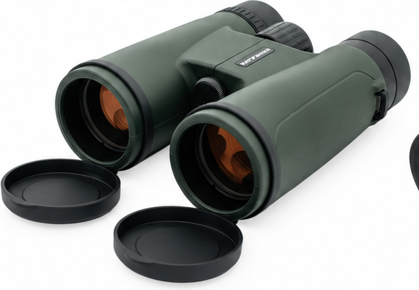
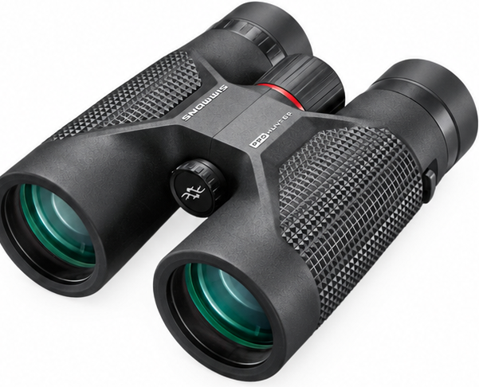

Guía rápida para explorar
¿TODOS LOS BINOCULARES SON PARA LO MISMO?



NO EXACTAMENTE.
No existe uno perfecto para todos. Existe el que mejor se adapta a ti.
Distintas formas de mirar
¿QUÉ TIPO DE OBSERVADOR ERES?
Experiencia cómoda y estable
8×42
Campo más amplio y vista estable
Más detalle a distancia
10×42
Más aumento, formato versátil
Llevarlo a todas partes
Compacto
Ligero para cada salida

Subir el nivel óptico
Premium
Óptica para ir más lejos
La mejor elección empieza por cómo y dónde observas.
El momento de elegir
ENTONCES… ¿CUÁL ES MEJOR?
VS
DEPENDE DE TI.
01 Qué quieres observar
02 Dónde lo usarás
03 Cuánto cargarás
04 Cuánto aumento necesitas
Tu respuesta importa¿Para qué quieres tus binoculares?Aves · Viajes · Fauna · Naturaleza · Uso general
Tu próxima aventura empieza aquí
HAY BINOCULARES PARA MUCHOS GUSTOS.
PERO QUEREMOS ENCONTRAR EL TUYO.
Escríbenos “BINOCULAR” y cuéntanos:
1 Qué quieres observar
2 Si ya has usado binoculares
3 Qué esperas de tu próximo equipo
Nosotros te ayudamos a comparar opciones.